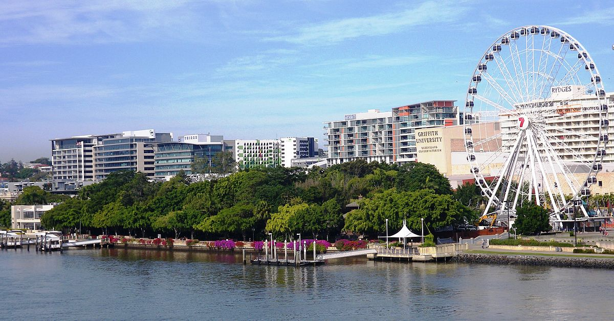

Southbank Parklands
South Brisbane

- Pet Friendly
- Close to the City
- Family Friendly
- Nearby Restaurants
- Active Life Guards
Customer Reviews:
My wife and I visited Brisbane for 24 hours. We went over to Southbank not knowing what to expect. WOW, what a great riverside walk. You could quite easily spend a whole day or two walking this. So much to see and is so relaxing. Take the river ferry across to the other side. We would be happy to visit Brisbane again just to do this walk. Good on Brisbane Council and Queensland Government, Thanks.
Such a wonderful, modern and useful public space for people of all ages. The lagoon is amazing and the space available so close to the city is brilliant. Nearest parking is a tad expensive but considering the facilities are all free it doesn't cause a problem. Keep coming back to this place as it's so good.
Took a walk here one Saturday morning. The place was nicely done up, with lots of shades, and wide open spaces. There is a big swimming area, and numerous cafes and restaurants where you can spend a relaxing time. Definitely worth a visit.
If you do anything in Brisbane you MUST visit South Bank. It is one of the nicest parks I've ever been to. There is so much to do and see there. You can spend the entire day relaxing, eating, swimming, etc. We spent many many hours there walking and relaxing.